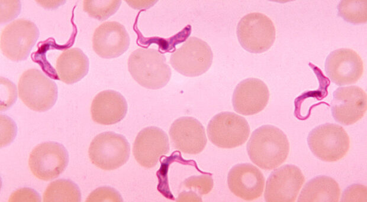
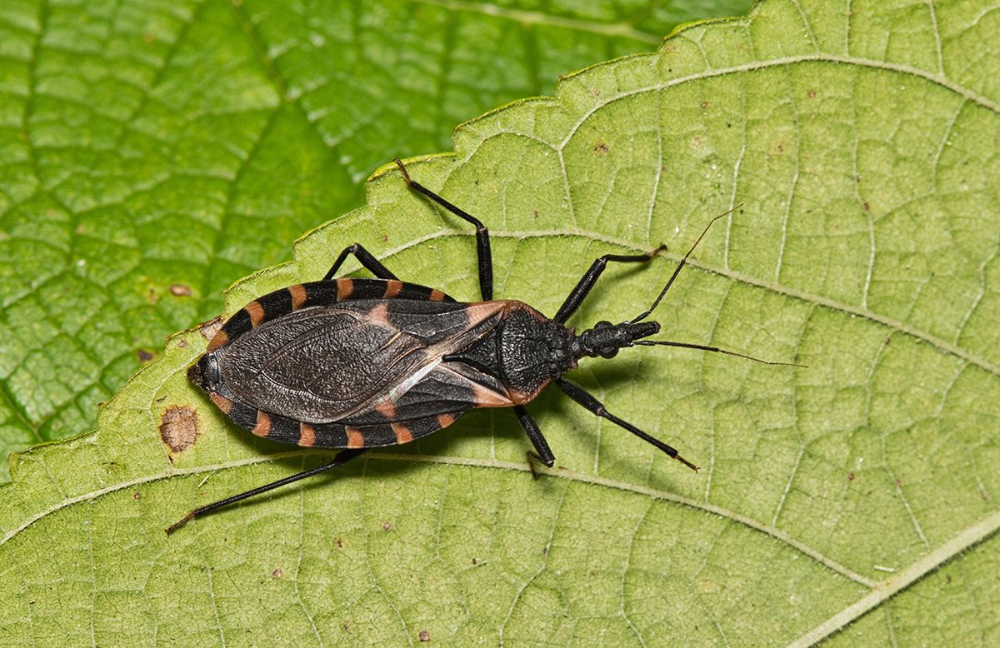

Doença de Chagas: Definição e Contágio
Definição
- Também conhecida como Tripanossomíase americana
- Infecção causada pelo protozoário Trypanosoma cruzi
- Doença endêmica nas Américas do Sul e Central
- Pode evoluir para formas crônicas com comprometimento cardíaco e digestivo
Meio de Contágio
- Transmissão pela picada de percevejos Triatominae (barbeiros)
- Contaminação ocorre pelas fezes do inseto que são depositadas durante a picada
- Outras formas de transmissão:
- • Ingestão de alimentos contaminados
- • Transmissão transplacentária (mãe para feto)
- • Transfusão de sangue ou transplante de órgãos

Trypanosoma cruzi visualizado ao microscópio

Barbeiro (Triatominae) - vetor da Doença de Chagas